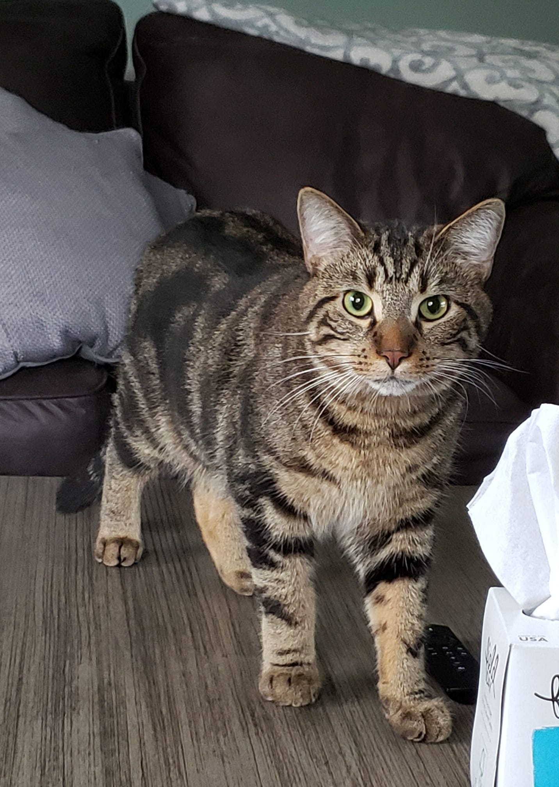

I am currently a junior at the American School of Correspondance. It's a distance school, so everything I do for it is at home, on my computer. Because of that, lot of the time I will call myself homeschooled, even though the school is recognized at a private school.
I have an older sister, an older brother, and a younger brother. My older brother is about to start college, and my younger brother is 14 now. My sister doesn't live with us anymore, but she has a baby daughter that I get to watch occasionally.
I have 8 pets, and half of them are cats. I like cats.
I don't exactly have hobbies, the only things I do in my freetime is scroll through instagram and watch youtube.
The only thing I know about where my family is from is that I have one great grandparent who came here from Austria, which makes me like 12% Austrian.
This is one of my cats, his name is Beans.
